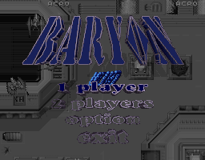
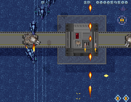

名稱：超時空戰機 (Baryon，英文版)
簡介：ACRO 1995年出品的垂直捲軸射擊遊戲，台灣由歡樂盒代理發行，只在開頭加入其中文
商標，其餘內容仍維持英文 [待補]。


備註：本版為1995/11/8版
保護：光碟
檔案：baryon-old.rar = 1995/8/1版（已破解，無動畫）
操作：
1P 2P
------------------------
移動 上下左右 IKJL
射擊 Alt X
炸彈 Ctrl Z
P = 暫停